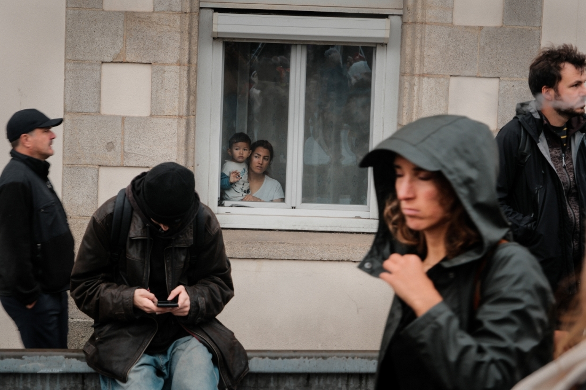
Article 11
Between 2021 and 2026, I photographed social demonstrations in Lorient, Brittany. Rather than documenting political demands, this work observes the gestures, faces and ordinary moments that emerge when people gather in public space. Families, workers, police officers and bystanders all become part of the same visual landscape. The title refers to Article 11 of the European Convention on Human Rights, while the photographs remain deliberately observational, leaving space for viewers to form their own reading.
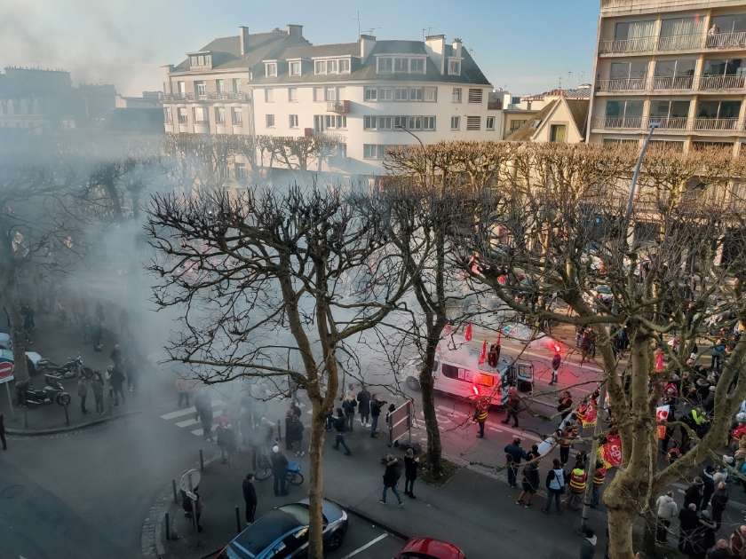
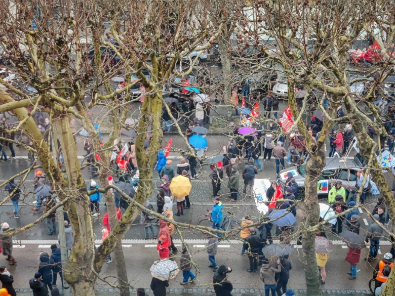
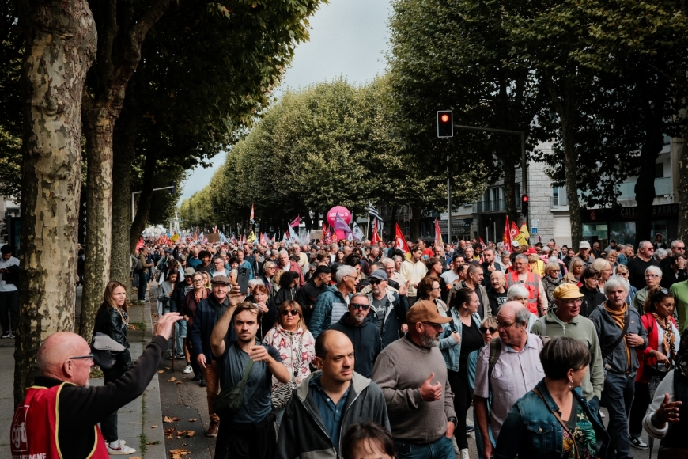
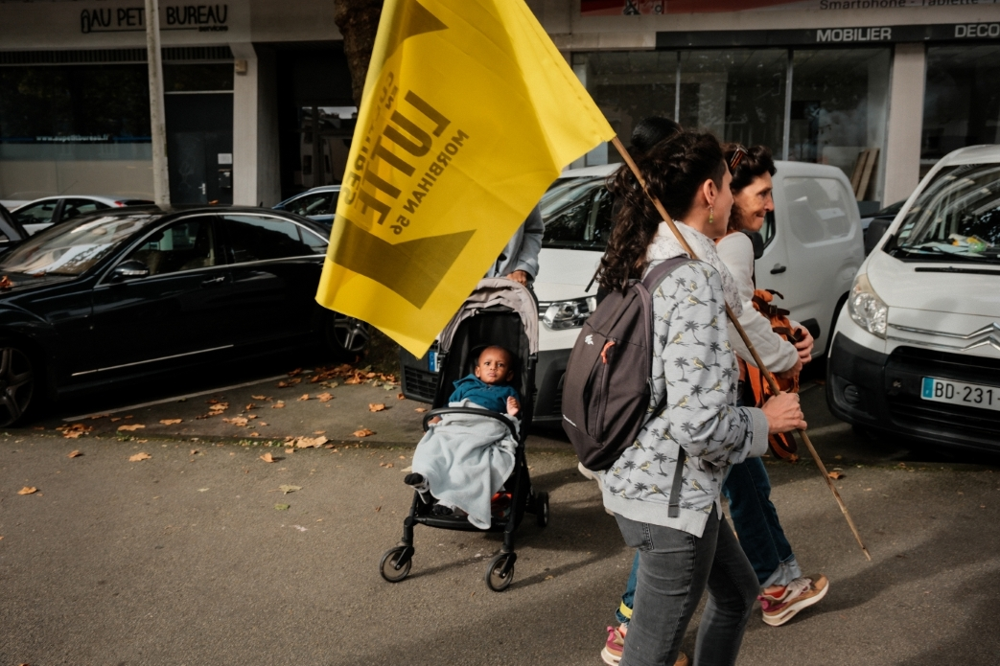
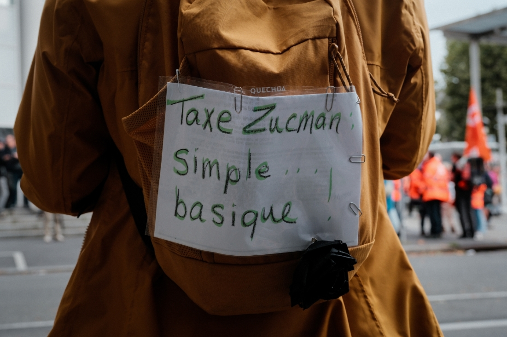
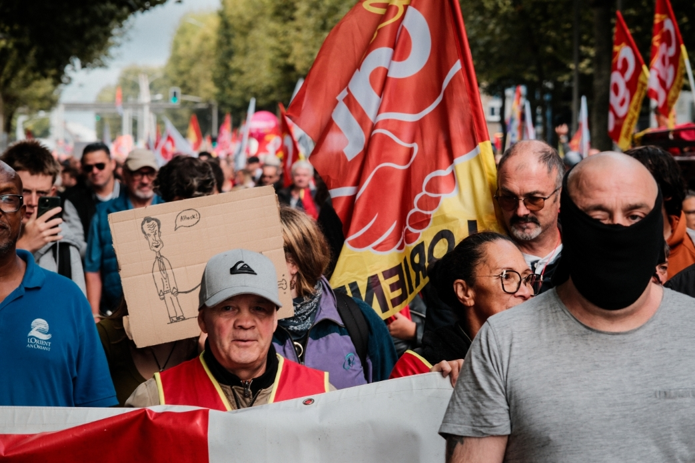
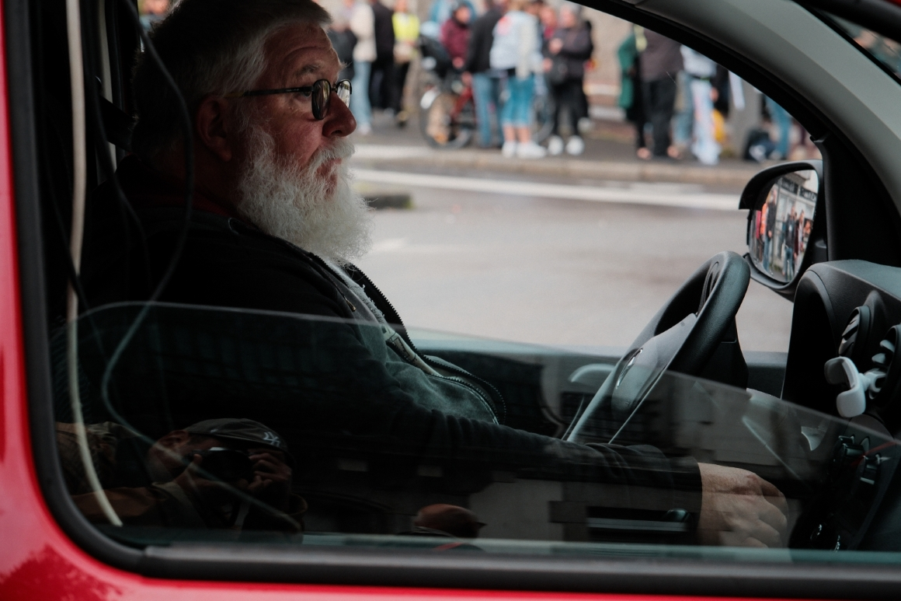
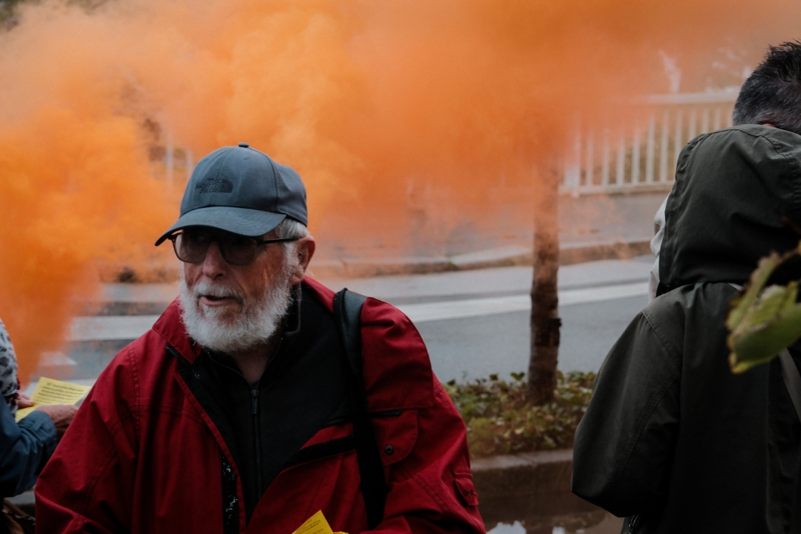
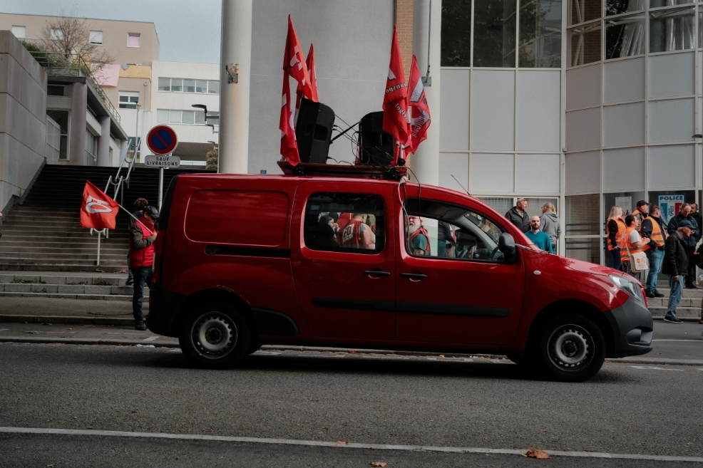
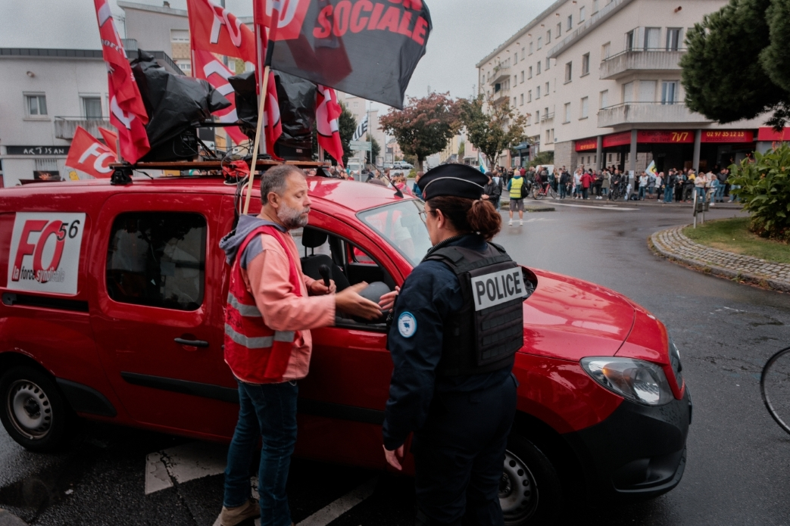
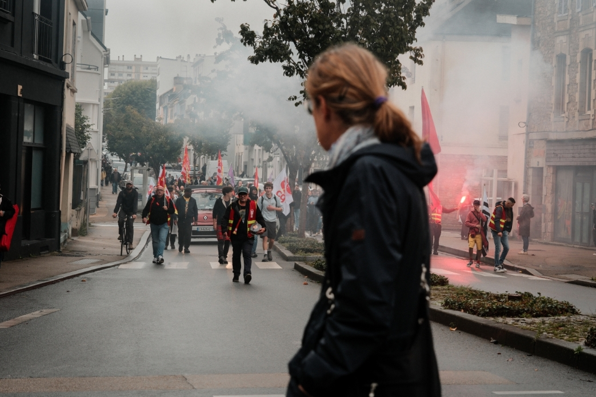
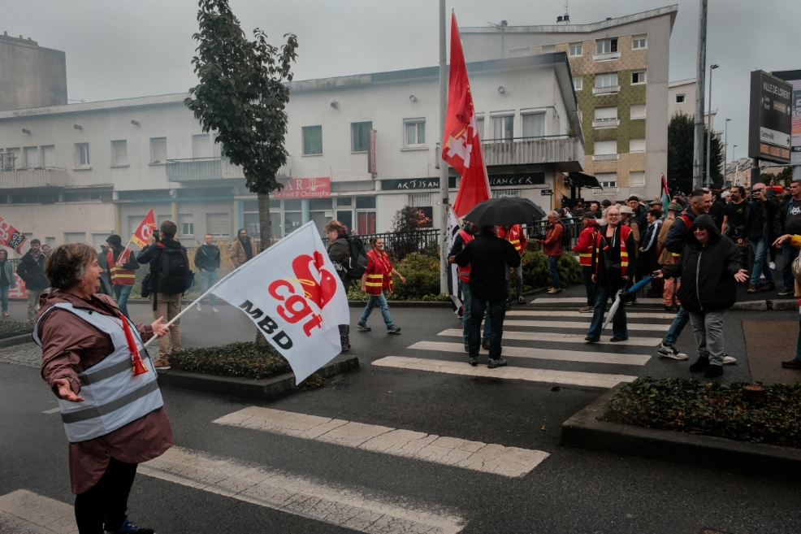
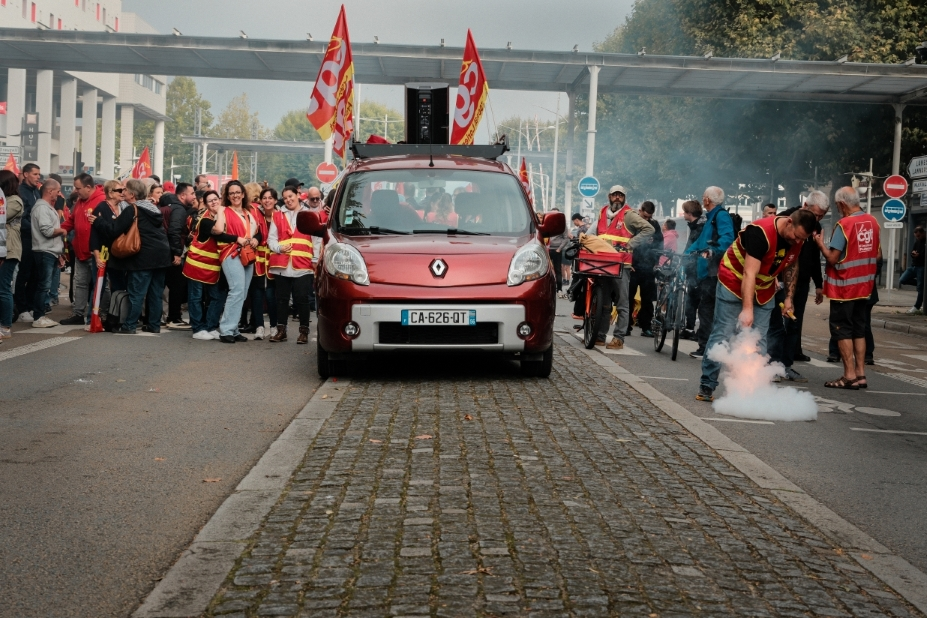
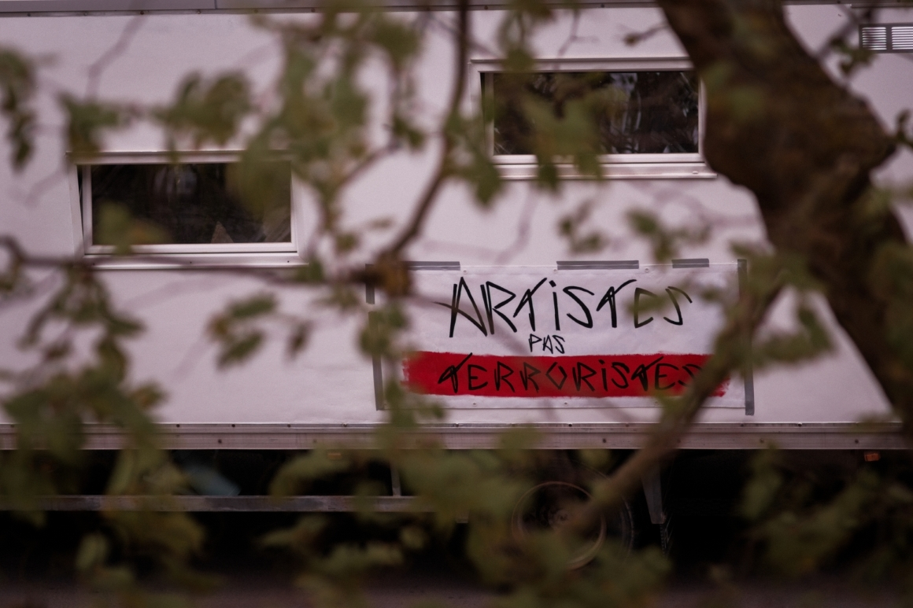